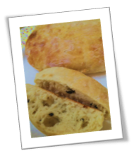

Patrick Yu
A question not asked is a door not opened.
이것저것 관심만 많은 잡식성 개발자입니다.
빵을 굽습니다.
빵보다는 빵 만들기를 즐깁니다.
귀촌을 꿈꿉니다.
An omnivorous developer, only have interests in variety fields.
Bake bread.
Enjoy making bread rather than bread itself.
Dream of returning to rural.

Awesome Patrick
Awesome Patrick은 제 개인적 관심사들을 정리하기 위한 블로그입니다.
GitHub Pages에서 호스팅 중입니다.
Hugo를 이용해 컨텐츠를 제작합니다.
Yoshiharu Yamashita의 Blackburn을 기반으로한 수정 테마를 사용중입니다.
Hugo를 사용하는 이유
GitHub Pages에서 기본으로 지원하는 Jekyll을 사용하려 했으나 Ruby, bundler, jekyll 등 다양한 환경에서 컨텐츠를 제작하기 위해서 설치하고 설정해야 하는 것들이 너무 많더군요.
Hugo는 실행파일 하나! 그래서 선택했습니다.
Awesome Patrick is a blog for managing my personal interests.
Being hosted on GitHub Pages.
Making contents using Hugo.
Using modified Blackburn theme originally made by Yoshiharu Yamashita.
The reason for using Hugo
Jekyll, which is the default tool supported by Github Pages, needs many installations and settings.
Hugo, while, needs only one execution file! This is why I use it.